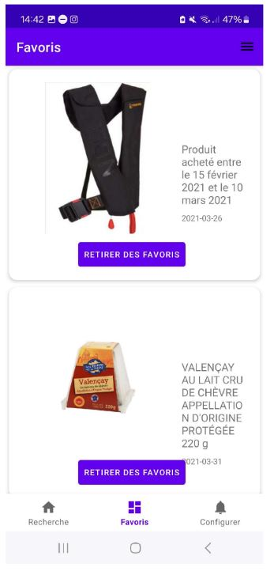
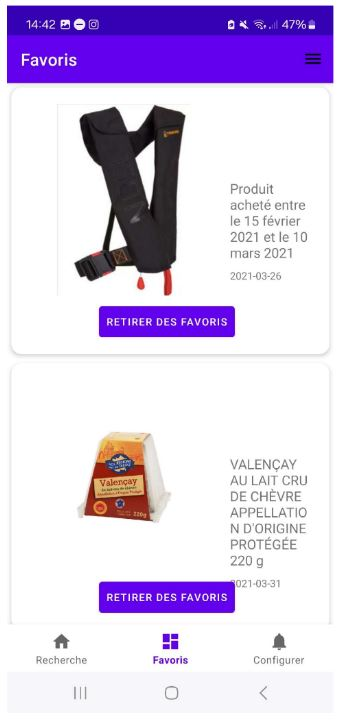

Louis RIVES-LEHTINEN
Licence d'informatique | CERI AvignonErasmus | VUT Brno University of Technology Télécharger mon CV
Ce projet a pour but de créer une application mobile utilisant l'API du site "rappel.conso.gouv.fr". L'application permet de suivre les rappels de produits en offrant plusieurs fonctionnalités clés : une recherche rapide et détaillée des rappels, la gestion des produits favoris, ainsi que des filtres personnalisables pour trier les résultats selon les préférences de l'utilisateur. Elle propose une expérience utilisateur fluide, avec des options de navigation intuitive et un affichage clair des données essentielles, telles que les risques associés et les modalités de compensation.
J'ai principalement travaillé sur la création de la base de données et la gestion des favoris, y compris l'ajout et le retrait des éléments, ainsi que la création de la page des favoris. J'ai également développé le SecondFragment, permettant d’afficher les détails des rappels et de gérer leur statut de favori.
Principales caractéristiques :
 
